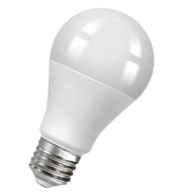

Магічна лампочка
Це магічна лампочка. На перший погляд звичайна, але ні. Якщо просто взяти в руку лампочку, то вона засвітиться.
У чому ж секрет?

Магічна лампочка
Це магічна лампочка. На перший погляд звичайна, але ні. Якщо просто взяти в руку лампочку, то вона засвітиться.